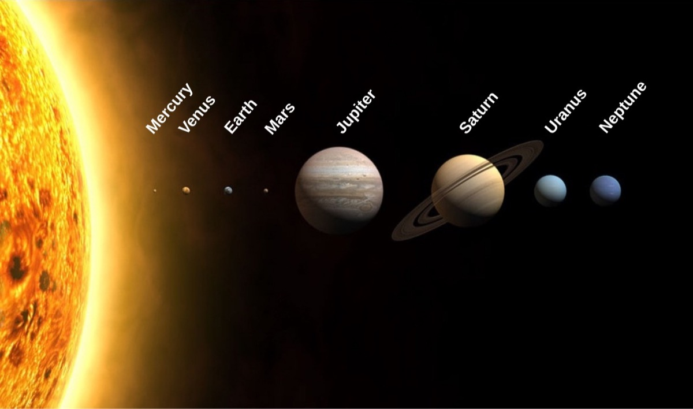

This site is a guide to the planets, dwarf planets, and moons of our solar system. Sign in to use the Explorer, read the facts page, and send a message through the Contact page.


What you can do here
-
Log In / Sign Up
Start here. An account only needs an email and a password, and you can change the password any time.
-
Explorer
Choose a group, then one object, and see its numbers. Everything happens on one page.
-
Solar System Facts
The big picture: the Sun, the belts, and the units used to measure space.
-
Contact
Send a question or a correction. Your message is saved, and you get a confirmation right away.